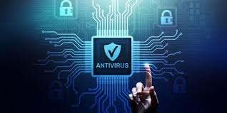
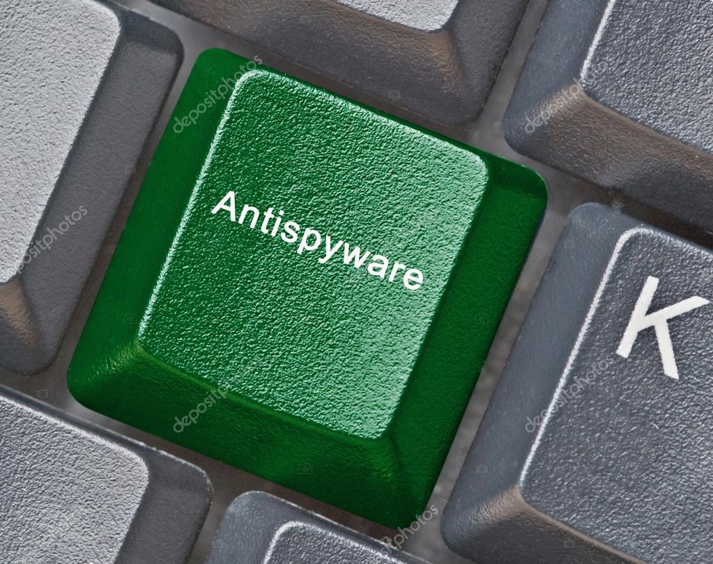
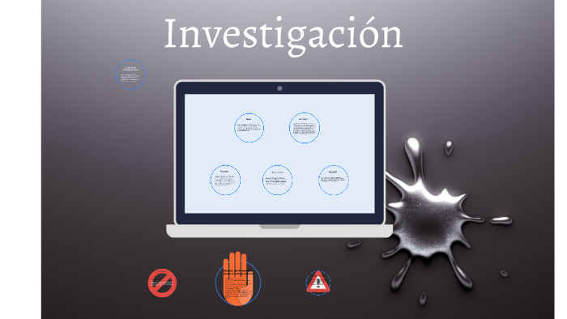

.png) INFORMATIXINFORMATIX
INFORMATIXINFORMATIX
Los tipos de virus informáticos pueden clasificarse según el ataque para el que están programados o por las características que los definen.
Los virus diseñados para realizar los conocidos como ciberataques, son acciones dirigidas a desestabilizar sistemas de información. Algunos ejemplos son:
Aunque existen muchas clases, resumimos a continuación los principales tipos de virus informáticos según sus particularidades:
ALGUNOS TIPOS DE VIRUS INFORMATICOS SON :
| Virus residentes | Estos virus se instalan en el ordenador y se ejecutan cada vez que se inicia el sistema. | |
| Gusanos | Estos virus se propagan a través de redes y medios de almacenamiento, como unidades flash USB y discos duros externos. | |
| Troyanos | Estos virus se disfrazan de programas legítimos para engañar a los usuarios para que los instalen. | |
| Virus de macro | Estos virus se ejecutan en aplicaciones de oficina, como Microsoft Office. V |
Los virus informáticos son programas maliciosos que se propagan de un ordenador a otro, infectando los archivos y el software. Pueden causar daños a los datos, el rendimiento del ordenador y la seguridad de la información.Hay muchos tipos diferentes de virus informáticos, que se pueden clasificar de diferentes maneras. Una forma de clasificarlos es según su método de propagación:si tiene alguna duda puede vistar
Otra forma de clasificar los virus informáticos es según su objetivo:
Algunos tipos específicos de virus informáticos incluyen:.
Para protegerse de los virus informáticos, es importante tener instalado un software antivirus actualizado y utilizar prácticas de seguridad informática seguras.
Algunos consejos para protegerse de los virus informáticos:
Al seguir estos consejos, puede ayudar a proteger su ordenador y sus datos de los virus informáticos.
Como señaló Discovery, el programa Creeper, a menudo considerado el primer virus, fue creado en 1971 por Bob Thomas de BBN. En realidad, Creeper fue diseñado como una prueba de seguridad para comprobar si era posible crear un programa capaz de replicarse. De cierta manera, lo fue. Con cada disco duro nuevo infectado, Creeper trataba de eliminarse a sí mismo del equipo anfitrión anterior. Creeper no tenía una intención maliciosa y solo mostraba un mensaje simple: "I'M THE CREEPER. CATCH ME IF YOU CAN!" (Soy Creeper, ¡atrápame si puedes!).
Según InfoCarnivore, el virus Rabbit (o Wabbit), que fue desarrollado en 1974, sí tenía una intención maliciosa y era capaz de replicarse. Después de infectar una computadora, realizaba múltiples copias de sí mismo, lo que causaba una reducción considerable en el rendimiento del sistema hasta colapsarlo. La velocidad de replicación fue la característica que determinó el término "virus".
El primer troyano, llamado ANIMAL, (aunque existe cierto desacuerdo sobre si se trató de un troyano u otro virus solamente) fue desarrollado por el programador informático John Walker en 1975, según informó Fourmilab. En esa época, los "programas de animales", que trataban de adivinar en qué animal estaba pensando el usuario con un juego de 20 preguntas, eran sumamente populares. La versión que creó Walker se hizo muy popular y el envío a sus amigos implicaba la grabación y la transmisión de cintas magnéticas. Para facilitar las cosas, Walker creó PREVADE , que se instalaba junto con ANIMAL. Mientras jugaba al juego, PREVADE examinaba todos los directorios informáticos disponibles para el usuario y realizaba una copia de ANIMAL en cualquier directorio donde no estuviera presente. La intención no era maliciosa, pero ANIMAL y PREVADE reflejan la definición de un troyano, ya que oculto dentro de ANIMAL había otro programa que ejecutaba acciones sin la aprobación del usuario.
Brain, el primer virus creado para PC, comenzó a infectar disquetes de 5,2" el año 1986. Según el informe de Securelist, este virus se atribuye a los hermanos Basit y Amjad Farooq Alvi, que regentaban una tienda informática en Pakistán. Cansados de que los clientes realizaran copias ilegales de su software, desarrollaron Brain, un programa que reemplazaba el sector de arranque de un disquete por un virus. El virus, el primero de tipo invisible, contenía un mensaje de derechos de autor oculto, pero en realidad no dañaba ningún dato.
La introducción de redes de banda ancha confiables y veloces a principios del siglo XXI modificó la manera en que se transmitía el malware. Este dejó de estar confinado a disquetes o redes empresariales y podía propagarse con gran rapidez a través de correo electrónico, sitios web populares o, incluso, directamente por Internet. Como resultado, comenzó a tomar forma lo que se conoce como malware moderno. El panorama de amenazas se convirtió en un ámbito mixto donde convivían virus, gusanos y troyanos, de ahí el uso del término genérico "malware" para referirse al software malicioso. Una de las epidemias más graves de esta nueva era fue LoveLetter, que apareció el 4 de mayo de 2000.
Como comenta Securelist, esta siguió el patrón de los primeros virus dirigidos al correo electrónico de la historia; pero, a diferencia de los macrovirus que dominaban el panorama de amenazas desde 1995, este no adoptaba la forma de un documento de Word infectado, sino que se presentaba en forma de archivo VBS. Este virus era simple y directo, y como los usuarios todavía no habían aprendido a desconfiar de los correos electrónicos no solicitados, funcionó. La línea de asunto era "I Love You" (Te amo) y el correo electrónico contenía un archivo adjunto, "LOVE-LETTER-FOR-YOU-TXT.vbs". El creador de ILOVEYOU, Onel de Guzmán, diseñó este gusano para que sobrescribiera archivos existentes y los reemplazara por copias de sí mismo, que luego se usaban para transmitir el gusano a todos los contactos de correo electrónico de las víctimas. Como el mensaje a menudo llegaba a nuevas víctimas procedente de alguien conocido, era más probable que lo abrieran, convirtiendo a ILOVEYOU en una prueba de concepto de la eficacia de la ingeniería social.
El gusano Code Red era un gusano "sin archivos", es decir, solo existía en la memoria y no intentaba infectar archivos en el sistema. Aprovechando una falla en el Servidor de información de Internet de Microsoft, este gusano de rápida replicación causó estragos después de manipular los protocolos que permitían a las computadoras comunicarse y se propagó globalmente en cuestión de horas. A continuación, como se informó en Scientific American, los equipos comprometidos se utilizaron para lanzar un ataque de denegación de servicio distribuido en el sitio web Whitehouse.gov.
Heartbleed, uno de los virus principales más recientes, surgió en 2014 y puso en riesgo servidores en toda la Internet. Heartbleed, a diferencia de los virus o gusanos, tiene su origen en una vulnerabilidad de OpenSSL, una biblioteca criptográfica de código abierto y propósito general que utilizan empresas de todo el mundo. Periódicamente, OpenSSL envía "pulsaciones" para comprobar que los endpoints seguros sigan conectados. Los usuarios pueden enviar a OpenSSL una cantidad específica de datos y solicitar la devolución de la misma cantidad; por ejemplo, un byte. Si los usuarios afirman que están enviando el máximo permitido, 64 kilobytes, pero solo envían un byte, el servidor responde con los últimos 64 kilobytes de datos almacenados en la RAM —observa el experto en seguridad Bruce Schneier— que pueden incluir de todo, desde nombres de usuario hasta contraseñas y claves de cifrado de seguridad.
ANTIVIRUS
Los antivirus informáticos son piezas de software de aplicación cuyo objetivo es detectar y eliminar de un sistema computarizado los virus informáticos. Es decir, se trata de un programa que busca poner remedio a los daños causados por estas formas invasivas de software, cuya presencia en el sistema no suele ser detectable sino hasta que se evidencian sus síntomas, tal y como los virus biologicos
Antivirus software, also known as anti-malware, is a computer program used to prevent, detect, and remove malware. Antivirus software was originally developed to detect and remove computer viruses, hence the name.
Antivirus software works by scanning your computer for known malware signatures and suspicious activity. When it finds malware, the antivirus software can remove it, quarantine it, or prevent it from running.
Antivirus software is an important part of any computer security system. It can help protect your computer from a variety of threats, including:
There are many different antivirus software programs available, both free and paid. Some popular antivirus programs include:
When choosing an antivirus software program, it is important to consider the following factors:
Once you have chosen an antivirus software program, you should install it on all of your computers, including laptops, tablets, and smartphones. You should also keep your antivirus software program up to date with the latest virus definitions.
In addition to using antivirus software, there are a number of other things you can do to protect your computer from viruses, such as:
By following these tips, you can help protect your computer and your data from viruses and other malware.
En la actualidad, los antivirus sirven para más que simplemente escanear y desinfectar una máquina que ha contraído un virus informático. Por lo general ofrecen servicios de monitoreo activo, para impedir el acceso total de un documento infectado al sistema, bloquear páginas web inseguras y eliminar archivos riesgosos apenas ingresen al computar. A esto suele llamársele protección activa.
Por otro lado, los antivirus informáticos lidian también con otras piezas de software no deseado, como el spyware, malware o rootkits, e incluso de intentos de hackeo. Para ello posee un firewall (software de bloqueo de conexiones remotas) y una base de datos de definiciones de virus, que es una suerte de enciclopedia de los virus ya conocidos

Puede identificarse varios tipos de antivirus informático, de acuerdo a su funcionamiento:
RECOMENDACIONES PARA UNA LIEMPIEZA DE SU EQUIPO:
descargue instalar CCleaner en tu ordenador para limpiar tu equipo de archivos innecesarios y acelerar el funcionamiento, presta atención cuando lo descargues porque el instalador tiene integrado el software de seguridad Avast Antivirus.
Si vas a
para probar la respuesta de los programas antivirus en el equipo. La razón detrás de esto es permitir a las personas, empresas y programadores de antivirus, probar su software sin tener que utilizar un verdadero virus informático
como hacer un chequeo con windows
a qui podra encontrar antivirus online
VACUNAS
SEGURIDAD INFORMATICA
Para el caso de que el virus haya bloqueado la mayoría de funciones del ordenador y no pueda descargarse ni ejecutarse la vacuna, existen memorias USB que se pueden adquirir en las tiendas y que permiten introducirla de manera física.
La seguridad de nuestros equipos y de la información es sumamente importante.
En las páginas recomendadas van a encontrar información y aplicaciones para
ayudarle a tomar medidas contra estos programas dañinos.
PAGINA RECOMENDADAS
antispyware

VACUNAS ANTI VIRUS
Kaspersky Virus Removal Tool
Cure it
Norton Power Erase
Herramienta de eliminación de software maligno
VACUNAS ANTI ESPIAS Y MALWARE
Adwcleaner
malwarebytes
ANTIMALWARE
QUE SON LOS ANTIMALWARE
Los antimalware son un tipo de software diseñado para detectar, prevenir y eliminar software malicioso, también conocido como malware. El malware es un software que tiene como objetivo dañar un dispositivo o sistema informático, y puede causar una variedad de problemas, como pérdida de datos, robo de identidad o daños físicos.
Los antimalware utilizan una variedad de técnicas para detectar y eliminar malware, incluyendo:
Los antimalware son una parte esencial de la seguridad informática. Al utilizar un antimalware actualizado y de buena reputación, puede ayudar a proteger su dispositivo de malware y mantener sus datos seguros.
Tipos de antimalware
Los antimalware se pueden dividir en dos categorías principales: antivirus y antispyware.

Mejores antimalware
Hay muchos antimalware disponibles en el mercado. Algunos de los mejores antimalware de 2023 incluyen:
Cómo elegir un antimalware
Al elegir un antimalware, es importante considerar los siguientes factores:
Consejos para utilizar un antimalware
Para obtener el máximo beneficio de un antimalware, siga estos consejos:
Al seguir estos consejos, puede ayudar a proteger su dispositivo de malware y mantener sus datos seguros.
ANTISPYWARE Y SOFWARE DAÑINO
El antispyware y el software son dos términos relacionados, pero no son lo mismo.
El antispyware es un tipo de software que se utiliza para detectar, prevenir y eliminar el software espía. El software espía es un tipo de malware que recopila información sobre los usuarios sin su conocimiento. Esta información puede incluir contraseñas, números de tarjetas de crédito y otra información personal confidencial.
El software es un término general que se refiere a cualquier programa de computadora. El software puede utilizarse para una variedad de propósitos, incluyendo la productividad, el entretenimiento y la educación.
El antispyware es una parte importante de la seguridad informática. Al utilizar un antispyware actualizado y de buena reputación, puede ayudar a proteger su dispositivo de software espía y mantener sus datos seguros.
Algunos ejemplos de software antispyware incluyen:
Puede descargar e instalar software antispyware de forma gratuita o comprar una versión comercial. Las versiones comerciales suelen ofrecer características adicionales, como protección en tiempo real y soporte técnico.
Es importante tener en cuenta que el antispyware no es un sustituto de un antivirus. Un antivirus protege su dispositivo de virus, que son otro tipo de malware. Para obtener la mejor protección, debe utilizar tanto un antivirus como un antispyware.
Los antispyware se pueden clasificar en dos categorías principales:
Además de estas dos categorías principales, también hay otros tipos de antispyware, como:
Cómo elegir un antispyware
Al elegir un antispyware, es importante considerar los siguientes factores:
Consejos para utilizar un antispyware
Para obtener el máximo beneficio de un antispyware, siga estos consejos:
Al seguir estos consejos, puede ayudar a proteger su dispositivo de software espía y mantener sus datos seguros.
Algunos ejemplos de antispyware
Algunos de los antispyware más populares incluyen:
RANSONWARE
El ransomware es un tipo de malware que restringe el acceso a los datos o al sistema operativo de una computadora, a cambio de un rescate. El ransomware suele cifrar los archivos de la víctima, lo que hace que sean inaccesibles. Para recuperar el acceso a sus datos, la víctima debe pagar un rescate al atacante.
El ransomware se ha convertido en una de las formas más graves de malware en los últimos años. Los ataques de ransomware han afectado a empresas, organizaciones y particulares de todo el mundo.
Cómo funciona el ransomware

El ransomware suele propagarse a través de correos electrónicos de phishing, enlaces maliciosos o archivos adjuntos. Una vez que el ransomware se ejecuta en un sistema, comienza a cifrar los archivos. El ransomware suele utilizar un algoritmo de cifrado fuerte que es difícil de descifrar sin la clave de descifrado.
Una vez que los archivos están cifrados, el ransomware muestra un mensaje de rescate. El mensaje de rescate suele exigir un pago en criptomonedas, como Bitcoin o Ethereum. El atacante afirma que, si la víctima no paga el rescate, los datos serán eliminados o publicados en línea.
Cómo protegerse del ransomware
Hay una serie de cosas que puede hacer para protegerse del ransomware, incluyendo:
Consejos para recuperar datos cifrados por ransomware
Si sus datos han sido cifrados por ransomware, hay algunas cosas que puede hacer para intentar recuperarlos, incluyendo:
Es importante tener en cuenta que no hay garantía de que pueda recuperar sus datos si han sido cifrados por ransomware.